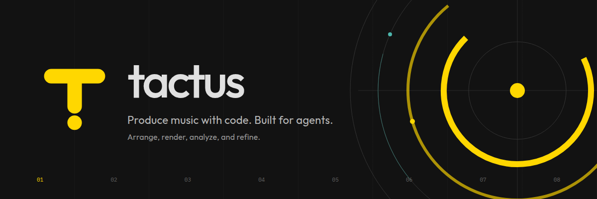

Tactus brand assets
Produce music with code. Built for agents.
Arrange, render, analyze, and refine.

Logo


Favicon
The same T and beat dot. Shown at actual pixel sizes.
16 px
32 px
48 px
Tactus · Light browser tab
Produce music with code. Built for agents.
Arrange, render, analyze, and refine.

The same T and beat dot. Shown at actual pixel sizes.